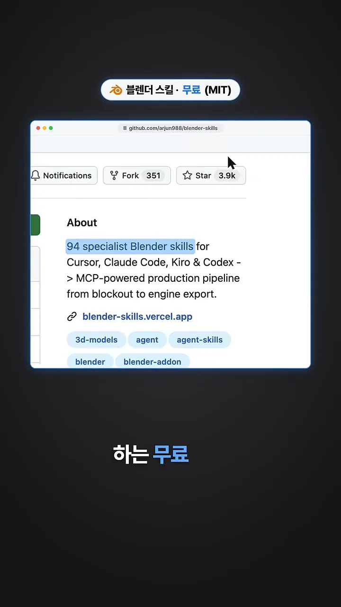
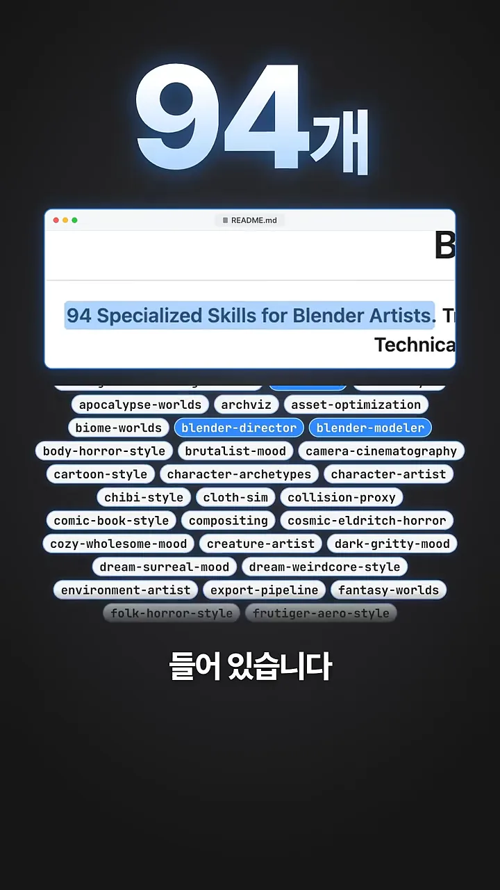
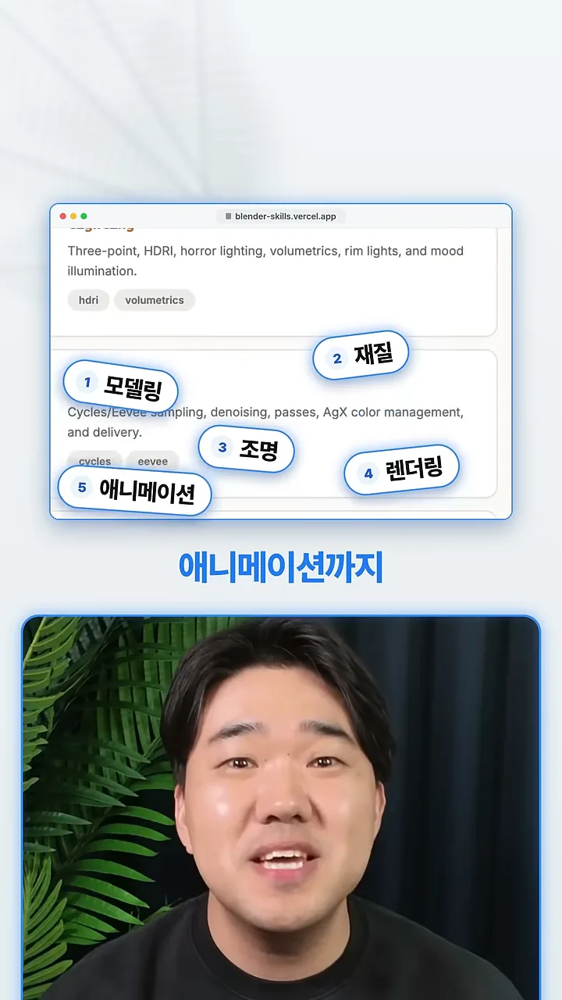
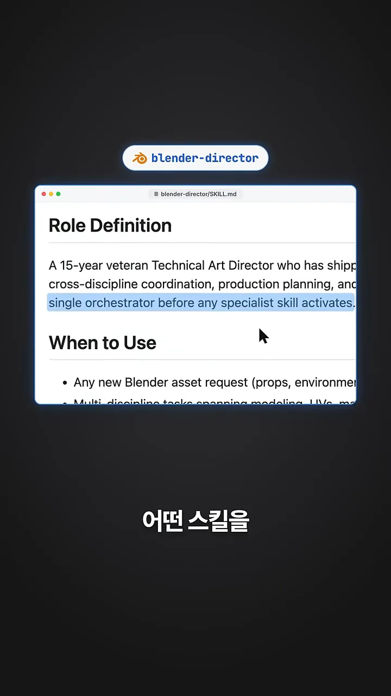
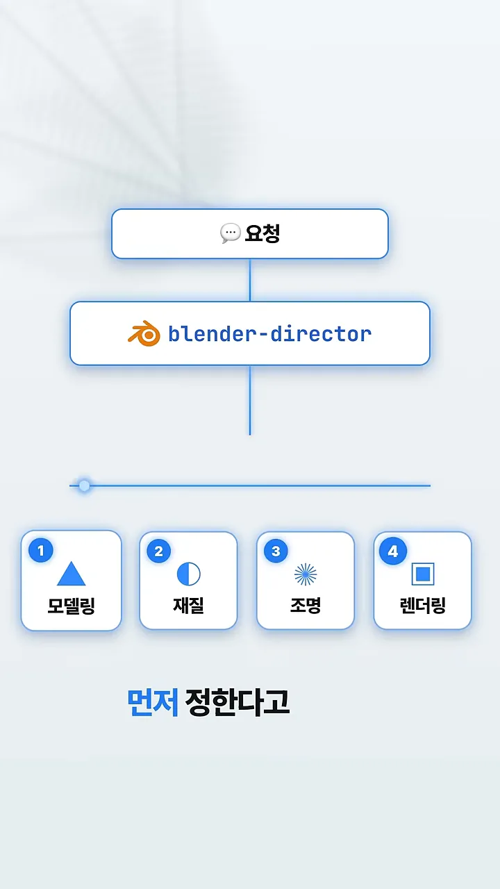
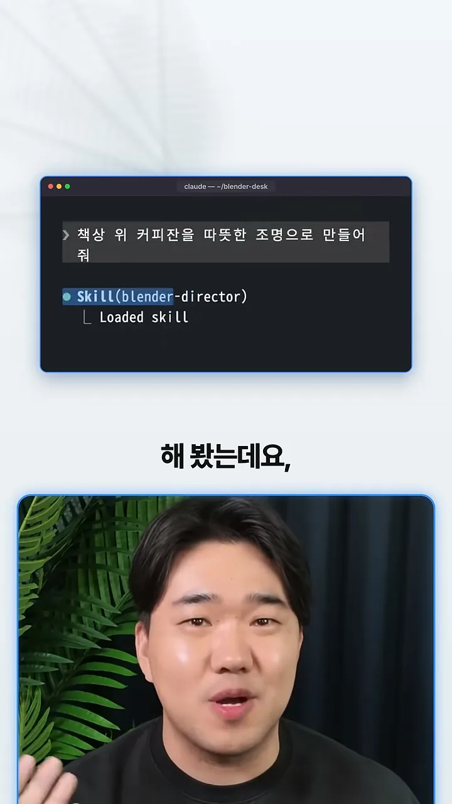
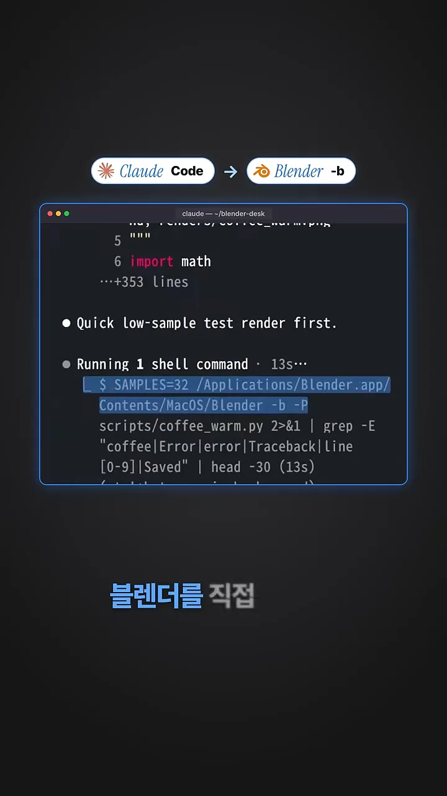
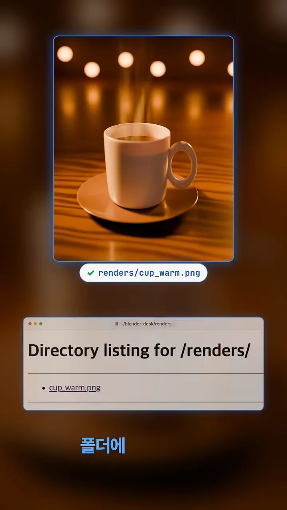

블렌더 스킬 94개는 무엇인가요
블렌더 스킬은 GitHub 저장소 arjun988/blender-skills에 올라온 스킬 묶음이에요. 화면 위쪽 배지에 '블렌더 스킬 · 무료 (MIT)'라고 적혀 있어요. About 칸에서 강조된 부분은 '94 specialist Blender skills'예요. 바로 뒤에 Cursor, Claude Code, Kiro, Codex가 나란히 적혀 있어서, 클로드 코드 전용이 아니라 여러 코딩 에이전트에서 쓰도록 만든 묶음이에요. 영상을 찍을 때 스타는 3.9k, 포크는 351이었어요.

README를 내려 보면 스킬 이름이 태그처럼 빽빽하게 이어져요. apocalypse-worlds, archviz, blender-director, blender-modeler, camera-cinematography, cloth-sim처럼 작업 단계 이름과 화풍 이름이 섞여 있어요. 파랗게 칠한 두 개가 blender-director와 blender-modeler인데, 다음 섹션에서 볼 지휘 역할의 스킬이 바로 이 blender-director예요.

공식 사이트(blender-skills.vercel.app)의 분류 카드 위에 영상이 번호를 붙여 놨어요. 1 모델링, 2 재질, 3 조명, 4 렌더링, 5 애니메이션 순서예요. 3D 장면 하나를 만드는 작업 순서와 그대로 겹쳐요.

디렉터 스킬이 순서를 먼저 정해요
94개 스킬 중 지휘를 맡는 건 blender-director예요. 화면은 이 스킬의 SKILL.md를 열어 Role Definition 부분을 보여 줘요. 강조된 문장은 'single orchestrator before any specialist skill activates'예요. 다른 전문 스킬이 움직이기 전에 먼저 나서는 단 하나의 조율자라는 뜻이에요.

영상은 이 흐름을 그림 한 장으로 정리해요. 맨 위 '요청'이 blender-director로 내려가고, 디렉터 아래에서 1 모델링, 2 재질, 3 조명, 4 렌더링 칸으로 갈라져요. 사용자는 스킬 이름을 몰라도 돼요. 무엇을 원하는지만 말하면 디렉터가 알맞은 스킬과 순서를 골라요.

커피잔 렌더까지 해 본 결과
발표자는 클로드 코드 터미널에 '책상 위 커피잔을 따뜻한 조명으로 만들어 줘' 한 줄만 입력했어요. 바로 아래 줄을 보면 Skill(blender-director)가 불려 오고 'Loaded skill'이 찍혀요. 앞 섹션의 설명대로 디렉터가 가장 먼저 움직인 거예요.

다음 화면 위쪽 배지는 'Claude Code → Blender -b'예요. 클로드 코드가 'Quick low-sample test render first.'라고 적고, 먼저 샘플 수를 낮춘 시험 렌더부터 돌려요. 파랗게 강조된 명령은 아래와 같아요. 블렌더 창을 띄우지 않고(-b) 파이썬 스크립트(-P)를 실행해요. 스크립트 scripts/coffee_warm.py도 클로드 코드가 직접 써 둔 파일이에요. 이 실행은 13초 걸렸어요.
SAMPLES=32 /Applications/Blender.app/Contents/MacOS/Blender -b -P scripts/coffee_warm.py| 명령 부분 | 하는 일 |
|---|---|
SAMPLES=32 | 스크립트에 넘기는 샘플 수예요. 낮게 잡아 시험 렌더를 빨리 끝내요 |
/Applications/Blender.app/…/Blender | 맥에 깔린 블렌더 실행 파일을 직접 불러요 |
-b | 창 없이 백그라운드 모드로 실행해요 |
-P scripts/coffee_warm.py | 장면을 만들고 렌더하는 파이썬 스크립트를 실행해요 |

결과는 renders/cup_warm.png로 저장됐어요. 나무 책상 위 받침 접시에 머그잔이 놓여 있고, 김이 오르고, 뒤로는 주황빛 조명이 흐릿하게 번져요. 아래 창은 renders 폴더 목록인데, cup_warm.png 한 장이 들어 있어요. 영상의 결론은 이거예요. 블렌더도 스킬도 무료라서 클로드 코드만 있으면 바로 해 볼 수 있어요.
